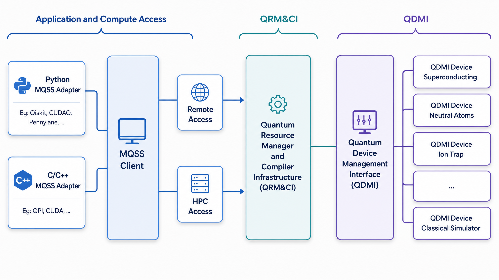
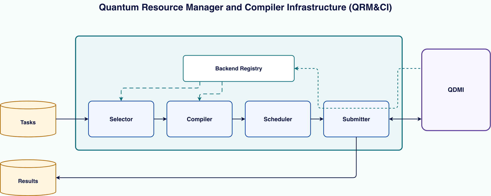

|
Quantum Resource Manager and Compiler Infrastructure (QRM&CI) 0.1.0
|
|
Quantum Resource Manager and Compiler Infrastructure (QRM&CI) 0.1.0
|
MQSS — the Munich Quantum Software Stack — is the broader stack this repository belongs to. It provides compilation and runtime infrastructure for on-premise and remote quantum devices, supports modern optimization techniques and high-level quantum programming abstractions, and is designed to work across deployment models ranging from stand-alone installations to tightly integrated HPC environments.
Quantum Resource Manager and Compiler Infrastructure (QRM&CI) is the HPC-side runtime layer in this repository. It moves quantum tasks through backend selection, compilation, scheduling, and device submission, with RabbitMQ queues between stages and QDMI at the device boundary.

QRM&CI treats task handling as a staged pipeline:
Each stage receives work, processes it, and forwards it. In standalone mode all stages run in one process. In distributed mode the selector and worker processes hand work to each other over RabbitMQ.

One turn of the standalone daemon's loop runs in a fixed order: it refreshes its own registry entry from QDMI and expires stale ones, then drains the task queue — selecting a backend, compiling and scheduling each task it finds — and finally submits and collects every job the scheduler has ready. The refresh comes first deliberately, so a quiet queue cannot starve it; the drain is a non-blocking poll, so a burst is handled in one turn rather than one task per poll interval. When a turn finds nothing to do, the daemon sleeps for the configured poll interval.
Nothing queues between the stages in this mode: the only queues involved are the intake queue the daemon consumes from (common.qrmciQueue, qrmci.tasks.queue by default) and, per result, the destination the task itself names in result_destination. A task that can be given no backend, fails to compile, or is refused by the device gets a cancellation result on that same destination. Whatever puts tasks on the intake queue — QOffload and the other MQSS frontend surfaces — is not part of this repository; see "What is not QRM&CI" below.
This repository does not implement every MQSS component around the pipeline:
QRM&CI currently ships two deployment modes:
The distributed topology is one selector paired with one or more workers. The selector keeps its backend registry from the status messages the workers publish, so adding a worker adds a backend the selector can choose from.
The pipeline logic lives in a static library, qrmci, built from include/qrmci/*.h and src/*.cpp. All three shipped binaries — qrmcid-standalone, qrmcid-distributed-selector, and qrmcid-distributed-worker — are a single main.cpp each, linked against that library. There is no plugin system: composing the pipeline differently means writing a fourth entrypoint the same way.
If the shipped daemons fit your needs, deploy them (Getting Started). If you need a different workflow, compiler, or scheduling strategy, write your own entrypoint against qrmci (Build custom QRM&CI workflow).
| I want to... | You are here if... | Start here |
|---|---|---|
| Deploy QRM&CI | you want the shipped standalone or distributed daemons | Getting Started |
| Build custom QRM&CI workflow | you need a different workflow, compiler, or scheduling strategy | Build custom QRM&CI workflow |
| Contribute to QRM&CI itself | you are editing code in this repository | Development Guide |
| Look up symbols and interfaces | you need the exact public types and function contracts | API Reference |